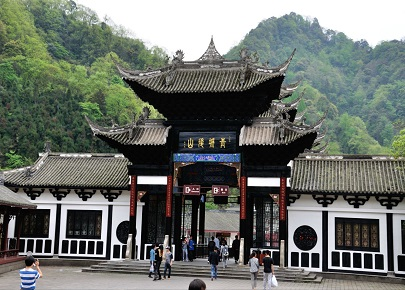
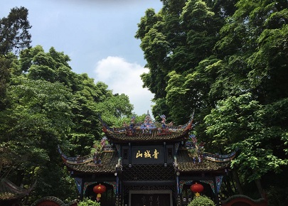
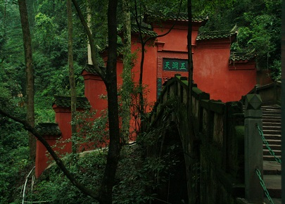
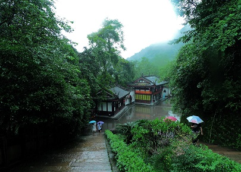

morly旅游网
自为青城客，不唾青城地。为爱丈人山，丹梯近幽意
青城山，一名丈人，一名赤城，一名清城，西岳佐命之山。为十大洞天第五洞，号曰“宝仙九室之天”，在青城县青城山洞，周回二千里，属青城丈人治之。环列三十六峰一百零八胜景，诸峰环绕状如城廓。青城丈人，黄帝所命也，主地仙人，是五岳之上司，以总群臣也。丈人领仙官万人。道士入其岳，丈人服朱光之袍，戴盖天之冠，佩三庭之印，乘科车从众灵，而来迎子。
青城山历史源远流长，相传轩辕黄帝时有宁封子，居青城山修道，曾向黄帝传授御风云的“龙跻之术”，黄帝筑坛拜其为“五岳丈人”，故后世又称青城山为丈人山，并建观(丈人观)纪念。在古时与湖北武当山、江西龙虎山、安徽齐云山、陕西景福山合称五大仙山。各自供奉真武荡魔大帝、五岳丈人宁封真君、昊天玉皇上帝、降魔护道天尊、广援普度天尊。
青城山主要植被类型有亚热带常绿阔叶林、常绿落叶阔叶混交林和暖性针叶林。根据青城山样地调查资料、野外路线踏勘记录的植物种类及《中国都江堰市植物名录》中所记载的青城山植物，初步估计植物346种，其中蕨类植物51种，隶属于26属16科，种子植物295种，隶属于192属90科。其中裸子植物7种6计青城山约有维管属5科；双子叶植物252种169属77科；单子叶植物36种22属8科。植物区系有明显从亚热带向温带过渡的特点。
青城山位于四川省成都市都江堰市西南、成都平原西北部、青城山-都江堰风景区内，距成都68公里，距都江堰市区16公里。全山林木青翠，四季常青，诸峰环峙，状若城廓，故名青城山。丹梯千级，曲径通幽，以幽洁取胜，自古就有“青城天下幽”的美誉。与剑门之险、峨眉之秀、夔门之雄齐名。
前山景区
前山以常观、上清宫为核心，宫观相望。建福宫青城山山道、祖师殿、朝阳洞等人文景观与金鞭岩、石笋峰、丈人山等自然风光彼此增色。主要景点为老君阁、月城湖、天师洞、上清宫、五洞天、仙履清凉、碧翠青城、天然图画、祖师殿、朝阳洞、圆明宫、建福宫。
后山景区
青城后山距成都60公里，距都江堰市区20多公里，总面积约100平方公里。与卧龙自然保护区相邻，是世界自然遗产四川大熊猫栖息地的重要组成部分之一。有"一山幽意论平分"之说。主要景点有金壁天仓、泰安古镇、水晶溶洞、三潭雾泉（金娃娃沱）、龙隐峡栈道、双泉水帘、百丈长桥、白云群洞、天桥奇景等。于二十世纪90年代初正式开放。
 建福宫
建福宫坐落于丈人峰下。始建于唐开元十八年（公元730年），后经历代多次修复，现仅存两殿三院。现存建筑为清代光绪年间（公元1888年）重建。现有大殿三重，分别奉祀道教名人和诸神，殿内柱上的394字的对联，被赞为“青城一绝”。建福宫筑于峭壁之下，气度非凡。其左侧是明庆府王妃遗址，西行一公里，即至岩石耸立，云雾缭绕的“天然图画”。宋代诗人范成大曾在此为宋帝祈祷，皇帝特授名为“会庆建福宫”。诗人陆游有诗描写当时的确良建福宫是“黄金篆书榜金门，夹道巨竹屯苍云。岩岭划若天地分，千柱眈眈在其垠”，观宫内保存有古木假山、委心亭、明庆符王妃的梳妆台遗址，以及壁画、楹联等文物。
祖师殿
祖师殿位于天师洞右后侧山腰间，出天师洞过访宁桥即到。祖师殿又名真武官，创建于唐代。唐代诗人杜光庭、薛昌，宋代张愈均在此隐居。唐睿宗的女儿玉真公主也曾在此修道，以求成仙。该殿环境幽静，殿内在真武祖师、吕洞宾、铁拐李等神仙塑像及八仙图壁画、诗文刻石等。
 内容整理至网络，如有侵权，请联系我们！1255394075@qq.com